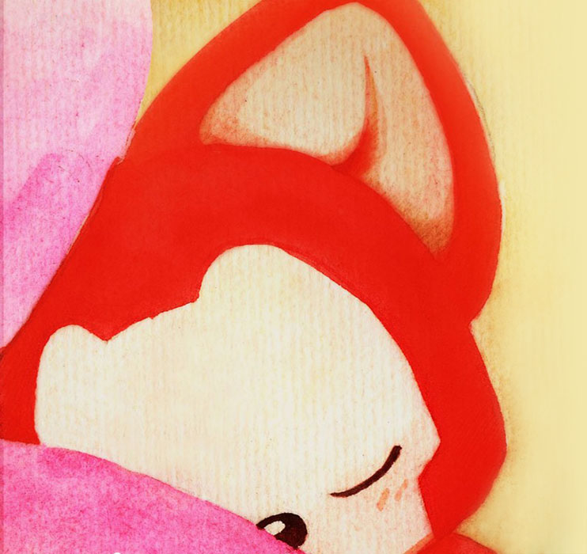
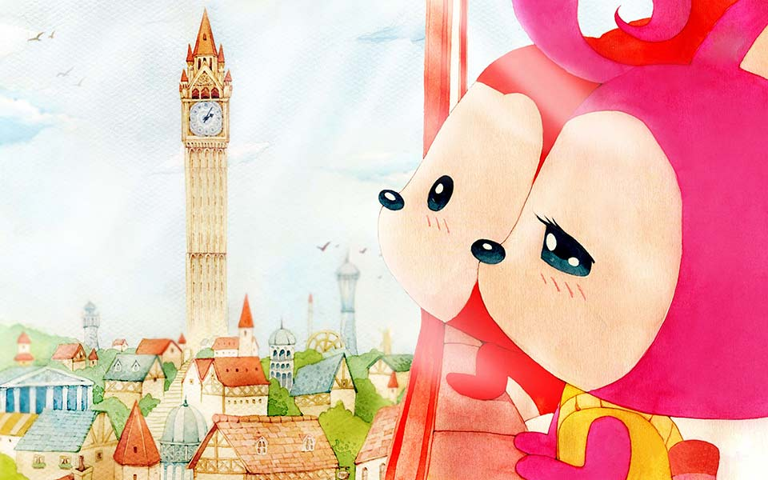

Poky ❤ Nidi Very Much
Slide "up" I have So much to say
In the past poky has always lived alone yearing for care and love

One's Care

A Boy's Mind

Thinking about you all the time

My mind all the time

But poky is optimistic and he is trying to smile everyday

Life is inevitably full of ups and downs

And Poky responds badly and immediately

Instantly feeling numb and alone

Becomes sad and sometimes sad for no reasons at all

But Poky can face every challenge of life
and he is ready to accept it


But where is the poky's only close one he ever got
Is it you,he asked himself first time when he met you,But he feared of losing even that friend too

He enjoyed the moment's of his time with you
Always having pure intentions and not even having a slight thinking that nido can left her too

But Poky accepted that and tried to move along
Walking alone in this fast paced place called Life

Untill one day that poky met Nido again

Poky began to smile again,without asking questions he began to adore nido once again,this time even more

But this time Insecurities and fear didn't left him free


He can look into Nido's tears that no one else can。。。

Poky tries his best to make Nidhi smile and give her happinees
Even making trips just to see her smile thinking she might be happpy to see poky there with her

Nido just have now begun to hate Poky's care

This was For the 1st time they are seeing and thinking this situation differently

But still tried his best to make her smile
Trying the best he can

Poky hate it even thinking of losing her once again

Poky just want to be nido's helping hand

He just wants to Enjoy some time with Nidhi

He wants to enjoy with her the fullest make her not just smile but laugh too

Enjoy sharing their life's details with each other

He wants both of them to study

He wants to cook with her too

ENjoy not the food they eat when they meet but also the time the spend together

He wants to enjoy the time with her and also want nido to enjoy the moments without thinking twice
He just nido to be happy in present..。
want her to forget the past and be happy
Live her life once again to be her fullest

But Poky gets sad himeself all the time and it makes him sad to see nido cry cuz of him

Pok's a dumbass and Nidhi too


They share most of their feelings togehter
They both want to Study and be sucessfull

Poky want both of em to have their dreams achived


But he just want to share all the ongoings with nido,his success his failures too
He drops mesaages to her too much
Thinking of to make her talk not just annoy her。


Looking the sky for answer for exactly what went wrong
Sleeping in the bed,waiting for the miracles
Figuring out daily,what acutally happened wrong

Just overthinking
Seeking some attention


Want to share some gifts some happinees but what can be done best is small things or acts which i can do

Hello There I am Sorry
Altough there are reasons to be Happy even without you,it just the memories of yours help
But it just feels to be alone when there are certain things which can be told to you only


There's always a hope
May be everything could be fixed
Wishing if life could give us a hop on chance once to enjoy the moments once again


Sorry for all the mistakes i made and for the things that just went on
Asking for your presence
Happy with a no too
Happy that you saw this far atleast
Hoping for the day when we could look to the life the way we used to watch

Always there for you

At last what i wanna say is
Poky really loves you and cares for you。
Have realised what is good and what bad happened! No
expectations but attachments and hope are there for sure.
Love you for sure now and did't wanted to let the feelings go waste to Have prepared this bullshit which i could create.I would love you and care for you as long as i could